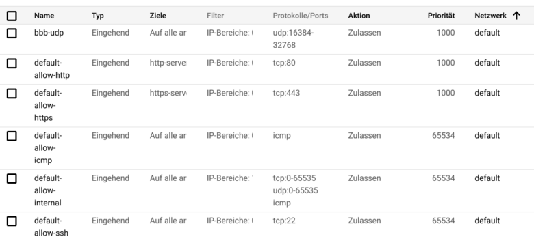
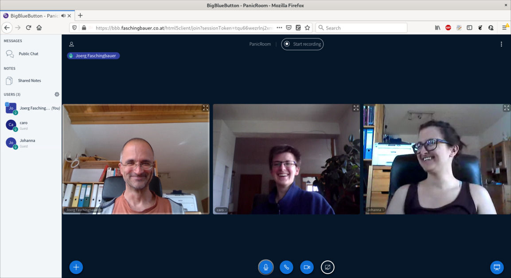

Using BigBlueButton for Online Training#
It’s the Age of the Corona Virus, and I have had opportunity to gain a little experience with Microsoft Teams and Zoom recently. I now know that doing my trainings online is definitely possible - it is more a matter of attitude [1] than a technical problem. Plus: I strongly believe that it is a shame I haven’t pursued this before. This post is an attempt at correcting that.
Microsoft Teams’ and Zoom’s focus are online meetings and collaboration. Moreover, both are hosted solutions - you do not setup software and servers, but rather throw in money and/or data and be done.
A different thing is BigBlueButton: it focuses on online teaching which makes it perfect for my needs. If you care about trust, it has the benefits that
Software is open source
You can easily install and host it yourself, which is what this article describes. It is also possible to spend money and let somebody else do that; see below.
Installing and hosting a solution that beats - I mean it - Teams and Zoom might sound like a lot of work. Just how much work that is, is the topic of this article.
TL;DR#
First: not a lot of work! I have setup a fully functional BigBlueButton instance out there in the cloud in less than an hour (including cloud). And for sure I am not a talented admin.
Second: it just works! With the focus on online training, features include
Video and audio sharing
Client runs in the browser; participants do not need to install anything
Whiteboard
Chats (class wide and one-to-one)
Breakout rooms
Fine grained (though easy) administration of users and rooms
With this, BigBlueButton beats any of the above regarding feature set and stability. Note that I do not intend to provide video streaming to hundreds of thousands, for example, so I cannot say anything about BigBlueButton in that regard.
Background Information#
For the curious, here’s some meta information along with links I have gathered while curiously reading around.
License. BigBlueButton is licensed under the LGPL. See here for more.
Source Code is hosted on GitHub.
Commercial support. Blindside Networks is the company who governs development. Along with a number of other companies, they provide support and hosting.
Web client, architecture. The native HTML5 client is relatively new, though exceptionally stable across modern browsers. It heavily depends on the browser’s WebRTC support. Before that, BigBlueButton used Flash for their UI; these times have come to an end fortunately, due to Flash’s long and painful death.
There is more to it than just the browser, naturally - see their architecture for more.
Hosting Setup#
I admit I am not a great admin. Programming is fine, and I understand what The Internet and firewalls are, but maintaining machines and networks is not something I’m good at, or even like. Consequentially, I have kept myself out of this business as much as I can. For example, I have never created a machine in the cloud - knowing that I couldn’t avoid it indefinitely. Time has come, and in case you are in the same position, then I can tell you it is not rocket science.
Here’s what I used for the test setup in this article.
Cloud. Google Cloud Platform lets you setup a VM in no time. (Others sure do too.)
SSL/TLS. BigBlueButton’s client runs in the browser (using WebRTC) which is cool. This requires that the browser access camera and microphone though - browsers do this only when the connection is secured by TLS. Long story short: I decadently let the install script generate me a certificate from Let’s Encrypt. (This matters when it comes to firewall settings.)
Domain name. At my DNS provider, I reserved
bbb.faschingbauer.co.at; I’ll use this domain name in the rest of the article.
What follows are the parameters of the VM I provisioned at GCP. Note that this is only a first shot, so don’t take this as real expertise.
Machine type.
n1-standard-8has 8 CPUs and 30G of RAM; this should suffice.Boot disk. Default is Debian, but BigBlueButton requires Ubuntu 16.04 LTS - change it accordingly. I gave it 500GB of disk space while I was at it (10GB appeared a little sparse when it comes to recording meetings).
External IP address. Create a static IP. This is where I point the DNS address (
A) record forbbb.faschingbauer.co.at.Firewall (initial setting). HTTP and HTTPS. HTTPS is mandatory (see above). HTTP is necessary for automatic Let’s Encrypt certificate issuance during the BigBlueButton installation. You can remove the rule when done, or simply leave it in place.
With this, you create the machine. Once that is done, add another firewall rule,
Firewall (again): permit UDP port range 16384-32768.
Firewall settings are important; here’s what I have,
Now login to the machine via SSH (clickable in the GCP window).
{kind=link}
Functionality Check#
Creating a room for a meeting is as easy as clicking on a big fat button,

Here’s a screenshot from a tryout session that I had with the kids. Video and audio quality no different from other tools, from a layman’s perspective. No glitches.
{kind=link}
I haven’t used the tool for a real-life training yet, as of 2020-04-21. What I did though, together with the kids, is to try out some of the features that I knew I am going to use in future trainings, like
Whiteboard
Chats
Breakout rooms
Really cool. All there, all working.
There’s no point in reproducing the steps here in this article. I suggest you take yourself a few minutes to try all those out. All I can say is that using BigBlueButton is absolutely simple - which usually means that it is well thought-out.
The Internet (in its Youtube incarnation) has a number of tutorials for basic and advanced usage. I cite some of them here; they answer any question I could have had (as well as those I couldn’t).
“BigBlueButton overview for moderator/presenters (with breakout rooms) in BigBlueButton”. By Fred Dixon, BigBlueButton project leader.
“BigBlueButton (AKA Canvas Conferences) - Student Tutorial”. By Bradley Schreffler who has a number of good videos. I strongly suggest you suggest your students to invest a few minutes upfront, to see what they’re up to.
“BigBlueButton - Frequently Asked Questions”. Bradley Schreffler, clearing up a number of questions.
“BigBlueButton - Advanced and Interactive Features”. Bradley Schreffler on a couple of not-so-obvious features.
This list is by far not exhaustive; look out for yourself if you have questions.
What Else?#
This article only covers my personal needs - those of a part-time trainer who gives online trainings from time to time. There is more to be had from BigBlueButton though, only some of which I list here.
It integrates with a large number of other systems that I have never heard of.
Apparently the developers have good taste, which can be seen from the API they provide.
It looks like the Corona era will not come to an end as fast as we might wish. Many people like me are currently looking for a way to carry on with their business, only in its online form. Whatever it will look like, my hope is that some of it will make its way into normality - whatever the definition of normality will be once we have returned to “business as usual”.
BigBlueButton and the set of involved companies have no marketing budget large enough to advertise their services on TV. Nevertheless, they are able to provide a viable alternative to those who just shout loud enough.
Footnotes